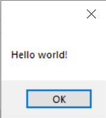
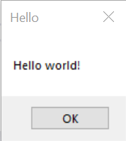
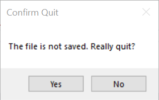
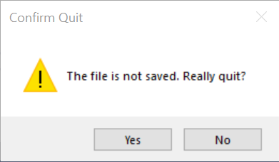

MessageBoxes
Message Boxes
The MessageBox class (found in the System.Windows.Forms namespace) provides a simple mechanism for displaying a message and obtaining one of a few simple responses from the user. The most common usage of a MessageBox is to call one of its various Show methods, each of which is static. The simplest Show method takes a string as its only parameter. The method then displays this string in a modal dialog containing an “OK” button. Thus, for example,
MessageBox.Show("Hello world!");
will display the following dialog:
Because the dialog is modal, it will block all other interaction with the program until the user closes it by clicking either the “OK” button or the “X” in the upper right. Furthermore, the Show method will not return until that time.
Other Show methods allow greater customization of a MessageBox. For example, one Show method takes as an additional parameter a second string giving a caption for the MessageBox. Thus, the statement,
MessageBox.Show("Hello world!", "Hello");
will display the following modal dialog:
Other Show methods allow the buttons to be customized. For example, one Show method takes, as its third parameter, an element from the MessageBoxButtons enumeration. This enumeration contains the following values:
- MessageBoxButtons.AbortRetryIgnore: Buttons labeled “Abort”, “Retry”, and “Ignore” are shown.
- MessageBoxButtons.CancelTryContinue: Buttons labeled “Cancel”, “Try Again”, and “Continue” are shown.
- MessageBoxButtons.OK: A single button labeled “OK” is shown.
- MessageBoxButtons.OKCancel: Buttons labeled “OK” and “Cancel” are shown.
- MessageBoxButtons.RetryCancel: Buttons labeled “Retry” and “Cancel” are shown.
- MessageBoxButtons.YesNo: Buttons labeled “Yes” and “No” are shown.
- MessageBoxButtons.YesNoCancel: Buttons labeled “Yes”, “No”, and “Cancel” are shown.
The values above containing the word, “Cancel”, cause the “X” in the upper-right of the dialog to be enabled. Clicking this button in these cases is equivalent to clicking the “Cancel” button. The value, MessageBoxButtons.OK, also enables this “X” button, but in this case, clicking this button is equivalent to clicking the “OK” button. Using a Show without a MessageBoxButtons parameter also gives this behavior. For all other MessageBoxButtons values, this “X” button is disabled.
In order to provide appropriate functionality to each of the buttons, each Show method returns a value of type DialogResult. This type is another enumeration containing the following values to indicate which button the user clicked:
- DialogResult.Abort
- DialogResult.Cancel
- DialogResult.Continue
- DialogResult.Ignore
- DialogResult.No
- DialogResult.None (this value won’t be returned by any of the Show methods)
- DialogResult.OK
- DialogResult.Retry
- DialogResult.TryAgain
- DialogResult.Yes
Suppose, for example, that we are writing a document formatter or some other application in which the user builds a document. If the user attempts to exit the program when the document is unsaved, we would like to give an opportunity to save the document. We can accomplish this with the following code:
DialogResult result = MessageBox.Show("The file is not saved. Really quit?", "Confirm Quit", MessageBoxButtons.YesNo);
if (result == DialogResult.Yes)
{
Application.Exit();
}
The first statement displays the following dialog:
Again, because the dialog is modal, the Show method does not return until the user closes the dialog by clicking one of the two buttons (the “X” in the upper right is disabled). When the user does this, the dialog closes, and the Show method returns either DialogResult.Yes or DialogResult.No to indicate which button the user clicked. If the user clicked the “Yes” button, then the if-statement will cause the program to terminate. Otherwise, the program will continue with whatever code follows (probably nothing more, as the program will need to await further user action).
We can also decorate a MessageBox with an icon that indicates what type of message it is. This requires another Show method having a fourth parameter of type MessageBoxIcon. MessageBoxIcon is another enumeration. Some of its values are:
- MessageBoxIcon.Error:
- MessageBoxIcon.Information:
- MessageBoxIcon.None (no icon)
- MessageBoxIcon.Warning:
This enumeration contains a few other values as well, but they currently are simply duplicate values for the above icons or values that Microsoft recommends against using. To add a warning icon to the above example, we could replace the first statement with:
DialogResult result = MessageBox.Show("The file is not saved. Really quit?", "Confirm Quit", MessageBoxButtons.YesNo, MessageBoxIcon.Warning);
This will display the following dialog:
Notice that in the above example, the “Yes” button has the focus; i.e., pressing “Enter” has the same effect as clicking this button. It is usually desirable to have the safest response as the default - in this case, the “No” button. To achieve this, a Show method having a fifth parameter, of type MessageBoxDefaultButton, is required. MessageBoxDefaultButton is another enumeration having the following values to select an appropriate button to be the default:
- MessageBoxDefaultButton.Button1
- MessageBoxDefaultButton.Button2
- MessageBoxDefaultButton.Button3
- MessageBoxDefaultButton.Button4
Thus, the following statement:
DialogResult result = MessageBox.Show("The file is not saved. Really quit?",
"Confirm Quit", MessageBoxButtons.YesNo, MessageBoxIcon.Warning,
MessageBoxDefaultButton.Button2);
produces a dialog similar to the one above, but having the “No” button as its default.
There are other Show methods that allow additional fine-tuning; however, the ones described here cover most of the functionality. For details on other Show methods, see the documentation for the MessageBox class.